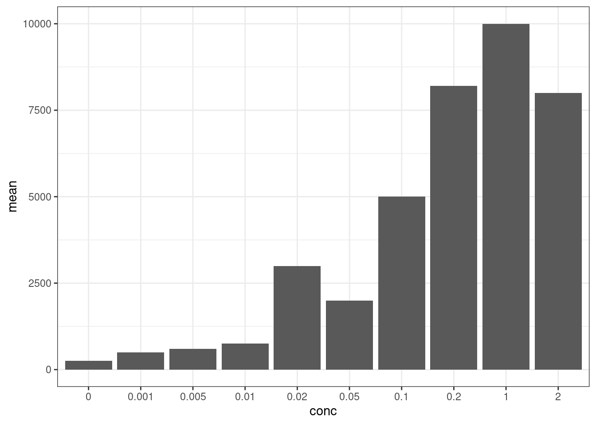
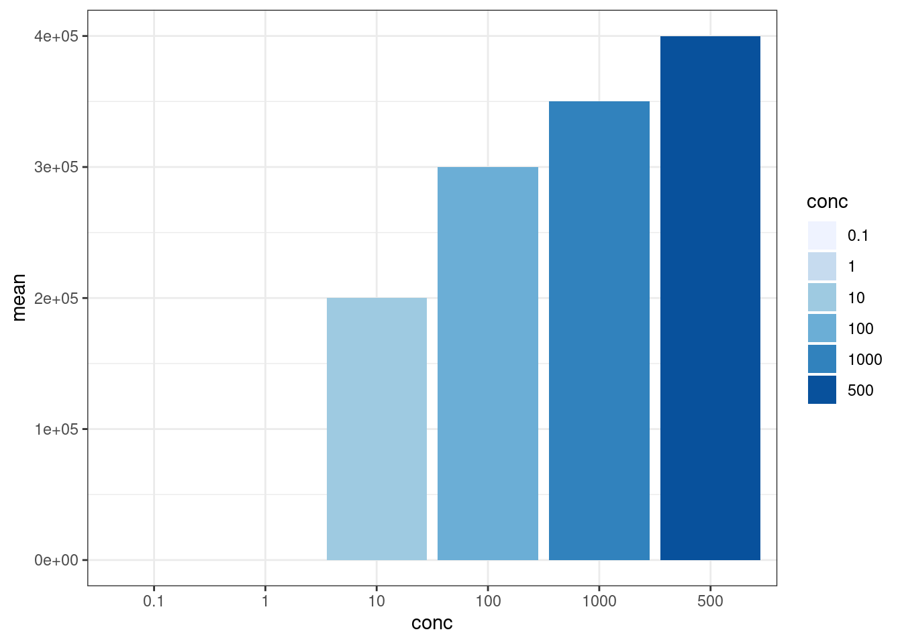

Field research
This is subtitle
이진주
24 June, 2021
1 연구 개요
R 프로그램을 이용하여 다양한 연구 결과를 종합, 정리하여 표준화할 수 있음.
합성생물학 분야의 대회인 iGEM 사례를 분석하며 R 프로그램을 이용해 데이터를 처리, 분석할 수 있음.
iGEM은 합성생물학 발전의 원동력이 되었다고 볼 수 있는데, 바이오파트를 표준화하거나 이를 이용한 유전자회로를 설계, 환경이나 보건 등의 목표를 가지고 연구하는 대회임.
이번 현장연구 수업에서는 iGEM 연구팀 중 특정 바이오파트를 이용한 연구에 대한 데이터를 수집하고 이를 통합하여 데이터를 분석하고자 함.
1.1 연구의 필요성
1.1.1 생물 분야는 시스템의 복잡성 때문에 실험 재현이 힘듬. 따라서 여러 연구자들의 반복 실험을 통해 특정 바이오파트의 표준화가 필요함.
1.1.2 Synthetic Biology is INVENTION!
– 합성생물학은 생물학에 공학적 개념을 적용함으로써 생물 시스템을 비교적 예측 가능하도록 만들기 위한 분야임.
– 전통적인 생물 실험이 연역적인 실험과 관찰, 발견에 기반했다면 합성생물학에서는 특정 목적을 위해 생물 시스템을 설계, 합성함으로써 발명의 측면으로 볼 수 있음
– 발명의 측면에서 보자면 vector map은 설계도, 즉 blueprint에 비유할 수 있으며 logic gate는 설계한 시스템의 기능적 의미를 담고 있음.
1.1.3 Producibility & Repeatability
– Producibility : 다른 사람이 동일한 실험을 했을 때 동일한 결과가 나옴.
– Repeatability : 한 사람이 동일한 실험을 했을 때 동일한 결과가 반복됨.
- Rmarkdown의 철학과 필요성에 대한 참고영상
link : https://www.youtube.com/watch?v=s9aWmU0atlQ&ab_channel=RStudio
- Replication Crisis : 반복성 없는 실험 (irreproducible research)에 의한 연구비 등의 소모
1.2 연구 목표
해당 현장연구 수업을 통해 합성생물학의 개념을 정립하고, 사용된 부품/회로들의 정량적 데이터를 수집하여 재현성을 분석할 수 있음.
데이터를 수집, 분석하는 과정에서 Rmarkdown/Rstudio를 활용한다.
2 연구 방법
2.1 연구 방법 1 : Data collection_iGEM & Rmarkdown practice
Rstudio는 R언어 외에도 다양한 언어를 이용한 프로그래밍을 지원하여 호환성이 좋으며, Rmarkdown, shiny 등을 활용하여 소통할 수 있음.
“#”, “##”, “###”를 글머리에 작성하면 홈페이지의 목차를 단계별로 지정할 수 있음.
“*”와 “-”를 글머리표로 사용할 수 있음.
Rmarkdown에서 code chunk를 추가하여 코드를 작성 (단축키 Ctrl+Alt+i)
1,2회차 수업을 통해 iGEM 홈페이지에서 5-10개 팀을 선정, 각 팀의 이름과 위키페이지 링크, 연구 내용 요약 등을 작성함. 수집한 데이터는 아래와 같음.
R markdown 파일로 작성 후 Knit 버튼에서 html, pdf, docx 중 원하는 포맷의 문서를 선택하면 해당 디렉토리에 파일이 생성됨.
팀이름, 소속 조직, 제목, 분류, wiki page, 해결하고자 하는 문제, 주요 해결 방법, 사용한 부품 등의 데이터 수집
데이터 수집 예시
2.1.1 TU Kaiserlautern
Year : 2019
Organization : Technical University of Kaiserslautern / Germany
Title : Chlamy Yummy - Revolutionizing plastic degradation by introducing Chlamydomonas reinhardtii as a eukaryotic secretion platform
Track : Environment
Subject : IPBES에 의한 동식물 멸종 / microtoxic pollutants에 의한 수질 오염
Strategy : Green algae Chlamydomonas reinhardtii를 이용한 micropollutants 분해 효소 발현
Used bioparts : MoClo system
Vector map : pGEX-6P-1 expression vector

TU Kaiserslautern
2.2 연구 방법 2 : Rmarkdown practice & iGEM report
iGEM team 정리
실험에 사용한 방법, 사용한 DNA 부품과 회로를 파악하고 데이터화함.
R의 데이터는 vector로 처리되며, numeric, logical, character 등 크게 세 가지로 나눌 수 있음.
vector 값의 유형을 알 수 있는 함수 : class()
Combine function인 c()를 활용하여 vector 지정
다음은 값을 저장하고 그 값의 유형을 알 수 있는 R 코드와 지정한 데이터값으로 data frame을 만드는 코드임.
v1 <- c(1, 2, 3, 4)
v2 <- c("a","b","c","d")
class(v1)## [1] "numeric"v_df <- data.frame(v1,v2)
v_df3 연구 결과
3.1 연구 결과 1 : github page 생성
link: https://github.com/JinjuLee119
3.1.1 Rstudio에서 project 생성
- Rstudio > File > New Project > New Directory
- Directory name 입력 후 create project
3.1.2 Local project를 GitHub repository에 연결
- Rstudio > Tools > Version Control > Project Setup > Git/SVN
- Version control system에서 git 선택
3.1.3 Local 저장소에 commit
- Rstudio 상단 GIT 아이콘 > Commit (단축기 Ctrl+Alt+M)
- upload하고자 하는 파일 staged에 체크
- Commit message 입력 후 Commit 버튼 클릭
- 팝업창 close 후 우측 상단 Push 클릭, 창 닫기
- terminal 창에서 commit하기 git add . git commit -m “update” git push
3.2 연구 결과 2 : 특정 바이오부품에 대한 iGEM 데이터 테이블 생성
- 할당된 프로모터 : BBa_R0062 promoter
- 다음 할당된 프로모터 : BBa_R0040
3.2.1 iGEM_team table
- iGEM 연구팀 이름, 프로젝트 이름, 연도, wiki페이지 링크 등을 포함한 데이터 테이블 만들기
library(readxl)
igem_team1 <-read_excel("igem_promoters_JJ.xlsx",sheet=1,skip=0, col_names=T)
igem_part1 <- read_excel("igem_promoters_JJ.xlsx", sheet=2, skip = 0, col_names=T)
igem_obs1 <- read_excel("igem_promoters_JJ.xlsx", sheet=3, skip = 0, col_names=T)
igem_team13.2.2 iGEM_part table
- 연구에 이용된 바이오부품의 id, 유형, plasmid backbone을 포함한 데이터 테이블 만들기
igem_part13.2.3 iGEM_obs table
- 바이오부품을 이용해 설계한 유전자회로로 실험한 결과를 정리한 데이터 테이블 만들기
igem_obs13.3 연구 결과 3 : 데이터 통합
3.3.1 From excel file to R program
- readxl 패키지의 read_excel 함수 사용
install.packages(“readxl”) library(readxl)
igem_team <- read_excel(“igem_promoters.xlsx”, sheet=1, skip=0, col_names=T)
- 위 코드를 이용, local R program에 upload한 엑셀 파일의 제목과 sheet number, skip할 row 개수, 첫째 행을 column name으로 적용할지 여부를 지정하여 table을 만들 수 있음.
3.3.2 From R program table to excel file
- R program에서 만든 data frame, table 형태의 데이터를 csv 파일로 저장하여 excel 파일로 전환할 수 있음.
write.csv(igem_part, “igem_part.csv”, quote=F, row.names=F)
library(readxl)
igem_team <- read_excel(“igem_promoters.xlsx”, sheet=1, skip = 0, col_names=T) igem_part <- read_excel(“igem_promoters.xlsx”, sheet=2, skip = 0, col_names=T) igem_obs <- read_excel(“igem_promoters.xlsx”, sheet=3, skip = 0, col_names=T)
3.4 연구 결과 4 : 원격 데이터 다운로드 및 통합
3.4.1 원격 데이터 다운로드
download/promoter 위치를 destdir 변수에 저장하고 사용할 수 있음.
다운로드하고자 하는 주소의 대부분이 동일할 경우 아이디 부분만 바꿔서 동일한 코드를 중복 작성할 수 있지만, 아래 예시처럼 for문을 이용하여 코드 중복을 줄이고 효율적인 코딩이 가능함.
for문을 사용할 경우 데이터를 저장할 공간이 필요한데 이 때 list 형태의 변수를 사용할 수 있음. list는 모든 타입의 데이터를 순차적으로 저장할 수 있음.
데이터를 통합하려면 여러 사람이 동일한 형태로 데이터를 정리해야 함. 데이터 타입 또한 동일하게 설정되어야 함.
for문을 사용한 데이터 다운로드
ids <- c("hayleykim97",
"th-kim310",
"Lelp27",
"aputron",
"gpemelianov",
"yoo-bh",
"seokjin-oh",
"treebird19",
"jinjulee119"
)
destdir <- "download/"
igem_team_cols <- c("id", "team_name", "project", "year", "wiki")
igem_part_cols <- c("id", "BBid", "type", "link", "backbone", "device_id", "team_id", "user")
igem_device_cols <- c("id", "device_name", "part_combination")
igem_obs_cols <- c("id", "strain", "indc", "conc", "concunit", "value", "valunit", "incubhr", "incubtemp", "device_id", "link")
library(readxl)
for(i in 1:length(ids)){
url <- paste0("https://github.com/", ids[i], "/", "researcheweb", "/raw/main/", destdir, "partdb.xlsx")
destfile <- paste0(destdir, ids[i], "_partdb.xlsx")
tempfile <- paste0(destdir, "temp_", ids[i], "_partdb.xlsx")
## ===============================================
cat("\n");flush.console()
}3.4.2 여러 사용자가 작성한 데이터 통합
데이터베이스는 객체끼리 관계를 맺을 수 있으며, 두 객체의 관계에는 일대일 (1:1), 일대다 (1:N), 다대다 (N:M) 관계가 있음.
데이터 통합 코드에 문제가 발생할 경우 다운로드한 파일 중 데이터 타입이 통일되어 있지 않은 데이터를 찾아 바꿔줌.
.png "Data processing")
Data processing
최종 데이터를 모두 합하면 동일한 ID를 갖는 데이터가 발생할 수 있음. 이 경우 최종 데이터 병합 후 테이블 간의 연관성이 유지되지 않음. 따라서 병합 전에 각 엑셀파일 이름에 사용자 id를 추가하여 데이터를 병합함.
각 엑셀파일에 사용자 id를 추가하기 위해 tmp %>% mutate(filename=filenames[i]) 함수를 이용해 사용자 id를 추가함.
library(tidyverse)## ── Attaching packages ─────────────────────────────────────── tidyverse 1.3.0 ──## ✓ ggplot2 3.3.4 ✓ purrr 0.3.4
## ✓ tibble 3.1.0 ✓ dplyr 1.0.5
## ✓ tidyr 1.1.3 ✓ stringr 1.4.0
## ✓ readr 1.4.0 ✓ forcats 0.5.1## Warning: package 'ggplot2' was built under R version 4.0.5## ── Conflicts ────────────────────────────────────────── tidyverse_conflicts() ──
## x dplyr::filter() masks stats::filter()
## x dplyr::lag() masks stats::lag()library(magrittr)##
## Attaching package: 'magrittr'## The following object is masked from 'package:purrr':
##
## set_names## The following object is masked from 'package:tidyr':
##
## extract## 다운로드 받은 엑셀 파일들
filenames <- dir(path = destdir, pattern = "*_partdb.xlsx")
tmp1 <- list()
tmp2 <- list()
tmp3 <- list()
tmp4 <- list()
for(i in 1:length(filenames)) {
destfile <- paste0(destdir, filenames[i])
tmp <- read_excel(destfile, sheet = 1, skip = 0, col_names = T)
tmp %<>% mutate(across(!where(is.character), as.character))
tmp1[[i]] <- tmp %>% mutate(filename=filenames[i])
tmp <- read_excel(destfile, sheet = 2, skip = 0, col_names = T)
tmp %<>% mutate(across(!where(is.character), as.character))
tmp2[[i]] <- tmp %>% mutate(filename=filenames[i])
tmp <- read_excel(destfile, sheet = 3, skip = 0, col_names = T)
tmp %<>% mutate(across(!where(is.character), as.character))
tmp3[[i]] <- tmp %>% mutate(filename=filenames[i])
tmp <- read_excel(destfile, sheet = 4, skip = 0, col_names = T)
tmp %<>% mutate(across(!where(is.character), as.character))
tmp4[[i]] <- tmp %>% mutate(filename=filenames[i])
}
igem_team <- do.call(bind_rows, tmp1)
igem_part <- do.call(bind_rows, tmp2)
igem_device <- do.call(bind_rows, tmp3)
igem_obs <- do.call(bind_rows, tmp4)3.4.3 테이블 간 데이터 연결 및 통합
- igem_part와 igem_team 데이터 테이블의 경우 team_id와 filename을 이용해 통합함.
library(tidyverse)
## new id
tmpdat <- igem_part %>%
left_join(igem_team, by=c("team_id"="id", "filename"="filename"))
tmpdat <- igem_part %>%
full_join(igem_team, by=c("team_id"="id", "filename"="filename")) %>%
select(id, BBid, type, backbone, device_id, user, filename, team_name, year) %>%
drop_na()
tmpdat2 <- igem_obs %>%
full_join(igem_device, by=c("device_id"="id", "filename"="filename")) %>%
select(id,strain,indc,conc,concunit,value,valunit,incubhr,incubtemp,device_id,device_name,part_combination,filename) %>%
drop_na()select(column name1, column name2, …) 함수를 통해 필요한 변수만 선택하는 코드를 추가할 수 있음.
drop_na()를 통해 선택한 변수의 데이터 중 NA가 있는 row를 제거할 수 있음.
igem_obs와 igem_device는 device_id와 filename을 이용해 통합함.
통합한 데이터를 가지고 실험 결과를 그래프로 나타낼 수 있음.
tmpdat %>%
filter(BBid=="BBa_I0500")tmpd <-tmpdat2 %>%
mutate(partcomb = lapply(strsplit(tmpdat2$part_combination, split=","), as.numeric)) %>%
filter(unlist(lapply(partcomb, function(x){1 %in% x})) & filename=="gpemelianov_partdb.xlsx")
finaldat <- tmpd
tmpd <-tmpdat2 %>%
mutate(partcomb = lapply(strsplit(tmpdat2$part_combination, split=","), as.numeric)) %>%
filter(unlist(lapply(partcomb, function(x){5 %in% x})) & filename=="gpemelianov_partdb.xlsx")
finaldat <- bind_rows(finaldat, tmpd)
plotdat <- finaldat %>%
select(-c(id, filename, part_combination, partcomb)) %>%
mutate(value = as.numeric(value))
plotdat %>% str## tibble[,10] [10 × 10] (S3: tbl_df/tbl/data.frame)
## $ strain : chr [1:10] "E.coli" "E.coli" "E.coli" "E.coli" ...
## $ indc : chr [1:10] "Arabinose" "Arabinose" "Arabinose" "Arabinose" ...
## $ conc : chr [1:10] "0.02" "0.2" "2" "0" ...
## $ concunit : chr [1:10] "mM" "mM" "mM" "mM" ...
## $ value : num [1:10] 3000 8200 8000 250 500 600 750 2000 5000 10000
## $ valunit : chr [1:10] "Fluorescence" "Fluorescence" "Fluorescence" "a.u." ...
## $ incubhr : chr [1:10] "12" "12" "12" "4" ...
## $ incubtemp : chr [1:10] "NA" "NA" "NA" "37" ...
## $ device_id : chr [1:10] "1" "1" "1" "2" ...
## $ device_name: chr [1:10] "D0001" "D0001" "D0001" "D0002" ...datasummary <- plotdat %>%
group_by(indc, conc) %>%
summarise(mean=mean(value), n=n()) ## `summarise()` has grouped output by 'indc'. You can override using the `.groups` argument.ggplot(datasummary, aes(x=conc, y=mean)) +
geom_bar(stat="identity") +
theme_bw()
library(tidyverse)
tmpdat %>%
filter(BBid=="BBa_R0062")tmpd <-tmpdat2 %>%
mutate(partcomb = lapply(strsplit(tmpdat2$part_combination, split=","), as.numeric)) %>%
filter(unlist(lapply(partcomb, function(x){1 %in% x})) & filename=="jinjulee119_partdb.xlsx")
finaldat <- tmpd
tmpd <-tmpdat2 %>%
mutate(partcomb = lapply(strsplit(tmpdat2$part_combination, split=","), as.numeric)) %>%
filter(unlist(lapply(partcomb, function(x){5 %in% x})) & filename=="jinjulee119_partdb.xlsx")
finaldat <- bind_rows(finaldat, tmpd)
plotdat <- finaldat %>%
select(-c(id, filename, part_combination, partcomb)) %>%
mutate(value = as.numeric(value))
plotdat %>% str## tibble[,10] [12 × 10] (S3: tbl_df/tbl/data.frame)
## $ strain : chr [1:12] "cell-free" "cell-free" "cell-free" "cell-free" ...
## $ indc : chr [1:12] "AHL" "AHL" "AHL" "AHL" ...
## $ conc : chr [1:12] "0.1" "1" "10" "100" ...
## $ concunit : chr [1:12] "nM" "nM" "nM" "nM" ...
## $ value : num [1:12] 10 100 200000 300000 400000 350000 10 100 200000 300000 ...
## $ valunit : chr [1:12] "FLU" "FLU" "FLU" "FLU" ...
## $ incubhr : chr [1:12] "15" "15" "15" "15" ...
## $ incubtemp : chr [1:12] "37" "37" "37" "37" ...
## $ device_id : chr [1:12] "1" "1" "1" "1" ...
## $ device_name: chr [1:12] "D0001" "D0001" "D0001" "D0001" ...datasummary <- plotdat %>%
group_by(indc, conc) %>%
summarise(mean=mean(value), n=n()) ## `summarise()` has grouped output by 'indc'. You can override using the `.groups` argument.ggplot(datasummary, aes(x=conc, y=mean, fill=conc)) +
geom_bar(stat="identity") +
theme_bw()+
scale_fill_brewer(palette="Blues")
위 결과는 여러 사람이 모은 데이터가 아니고, 반복 측정된 데이터가 없어서 재현성을 확인할 수는 없음.
다른 part들에 대해서도 동일한 방법으로 분석을 수행할 수 있으며, 여러 사람이 참여해서 데이터가 충분히 많아질 경우 하나의 부품이 얼마나 많은 편차를 가지고 있는지에 대한 의미 있는 결과를 얻을 수도 있음.
3.5 연구 결과 4 : 홈페이지 만들기
link: https://jinjulee119.github.io/researcheweb/
R markdown 파일을 html로 compile하여 웹사이트의 각 탭을 생성함.
“My ResearchE Class Website”라는 이름의 홈페이지를 만들어 Home, About, Introduction 등 5개의 tab을 생성함.
홈페이지에 표시할 내용을 작성한 R markdown 파일을 만들고, knit로 html 파일을 생성함.
name: “My ResearchE Class Website”
navbar:
title: “My ResearchE Class Website”
left:
- text: "Home"
href: index.html
- text: "About"
href: about.html위 내용으로 text file을 작성, _site.yml 파일로 저장함.
웹사이트의 각 탭에 필요한 내용을 작성할 수 있음.
예시 Introduction : 생물학의 반복성과 재현성 극복을 위한 소프트웨어 (R, Rstudio, Rmarkdown, git) 활용, 협업 (data sharing), 합성생물학 데이터 수집 등 Method & Results : 배운 내용들 정리 (ex. Rstudio, git, rmarkdown 사용법, 합성생물학 데이터 수집 방법 등), submenu를 만들어서 각 주제별로 Rmd 파일 만드는 것도 좋음 Discussion
4 고찰
4.1 Rstudio/Rmarkdown을 이용한 데이터 처리
예시로 주어진 I0500 외에 다른 바이오부품에 대해서도 분석을 수행할 수 있음.
직접 데이터를 수집한 R0062에 대해서도 동일한 방법으로 그래프를 만들어봄. 그래프 작성 시 fill, scale_fill_brewer 등의 부가적인 기능을 부여하여 그래프를 작성함.
이번 수업에서는 하나의 파트에 대해 한 사람이 조사한 결과에서만 데이터를 분석했지만 여러 연구자가 수행한 동일한 실험 데이터를 분석할 경우 Rstuio를 통해 해당 실험의 반복성을 확인하기 용이함.
4.2 데이터 통합 과정에서의 오류 해결
tmpdat2 <- igem_obs %>%
full_join(igem_device, by=c(“device_id”=“id”, “filename”=“filename”)) %>%
drop_na()
tmpdat2 %>% str
위 코드를 수행할 경우 tmpmdat2 table에 변수만 15개고, 데이터가 모두 사라짐.
0 obs. of 15 variables, 15개의 column을 가지고 있지만 data가 없는 table로 만들어짐.
이유를 파악해본 결과, igem_obs와 igem_device 데이터 테이블에 NA가 매우 많음. 사용자에 따라 igem_obs의 promoter column이 없는 경우도 있고, strain 데이터가 없는 경우도 발견됨.
결과적으로 drop_na() 코드로 인해 NA가 포함된 모든 row가 제거됨.
따라서 이를 수정하기 위해 NA가 없는 column을 지정해주면 해당 column에서 NA가 있는 row만 제거해야 함.
tmpdat2 <- igem_obs %>%
full_join(igem_device, by=c(“device_id”=“id”, “filename”=“filename”))
- 위 코드를 수행할 경우 table of 146 obs. of 15 variables
tmpdat2 <- igem_obs %>%
full_join(igem_device, by=c(“device_id”=“id”, “filename”=“filename”)) %>%
select(id,strain,indc,conc,concunit,value,valunit,incubhr,incubtemp,device_id,device_name,part_combination,filename) %>%
drop_na()
- 위 코드를 수행하여 NA가 다량 포함된 column을 제외하고 로딩할 경우 table of 115 obs. of 13 variables가 정상적으로 생성됨.